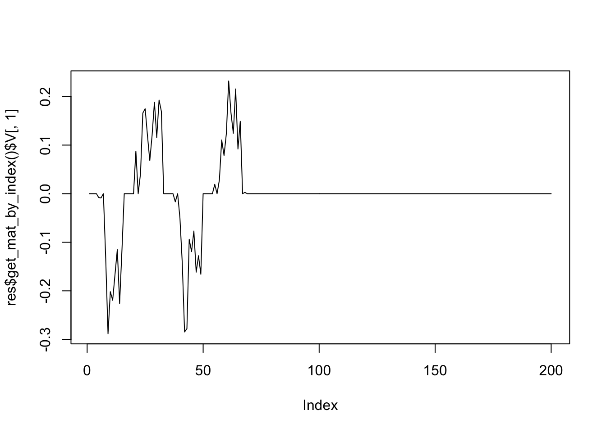
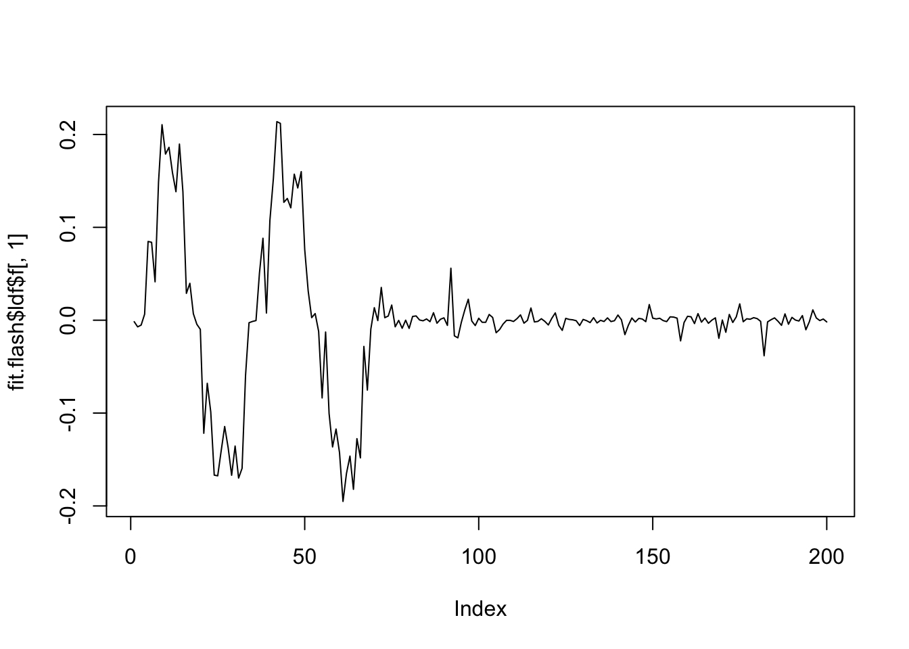
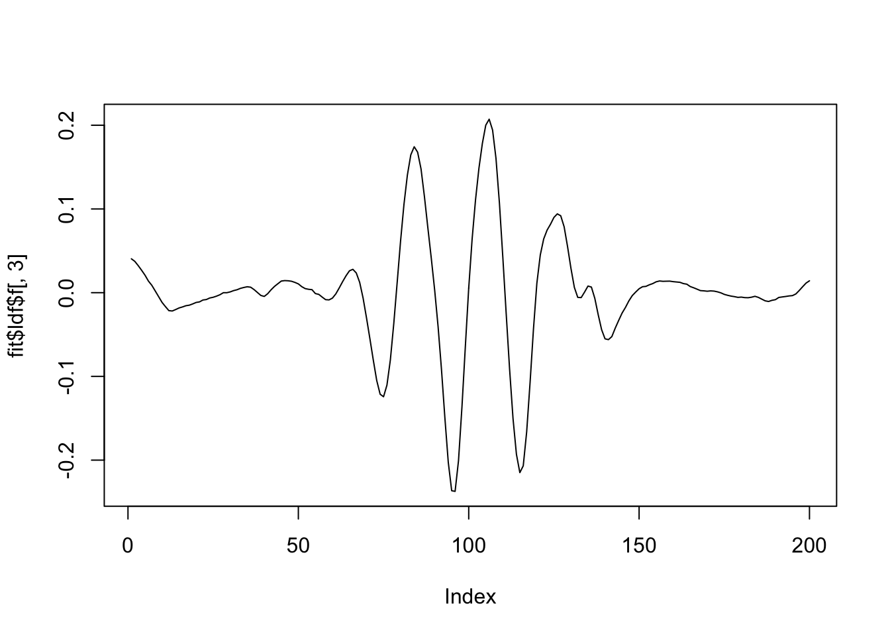
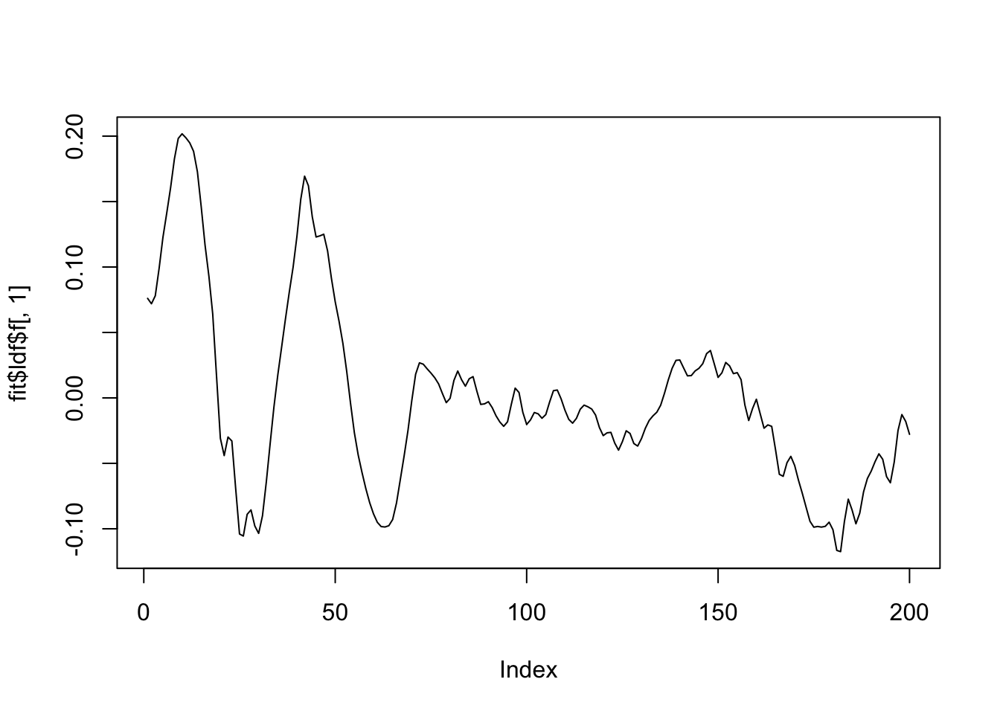
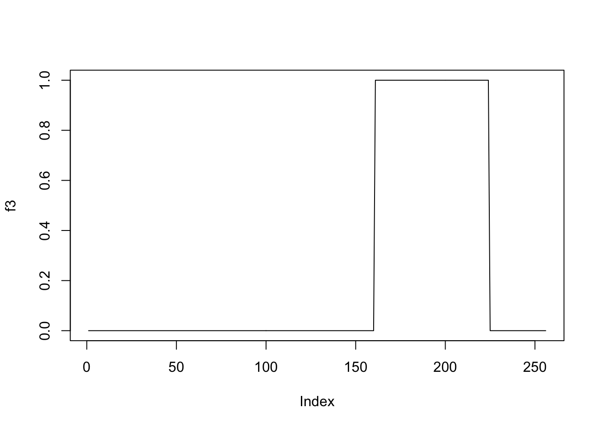
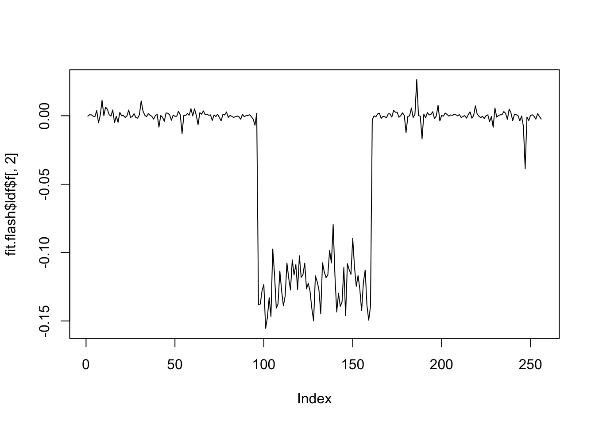
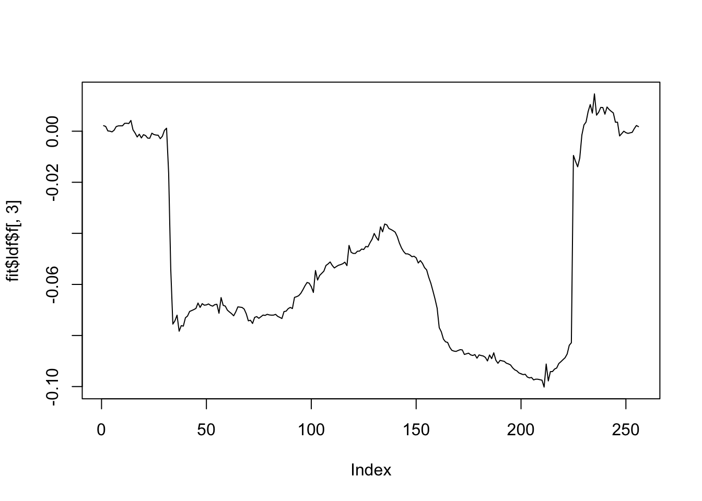

Try MoMA package
Dongyue Xie
2022-04-16
Last updated: 2022-04-18
Checks: 7 0
Knit directory: SMF/
This reproducible R Markdown analysis was created with workflowr (version 1.7.0). The Checks tab describes the reproducibility checks that were applied when the results were created. The Past versions tab lists the development history.
Great! Since the R Markdown file has been committed to the Git repository, you know the exact version of the code that produced these results.
Great job! The global environment was empty. Objects defined in the global environment can affect the analysis in your R Markdown file in unknown ways. For reproduciblity it’s best to always run the code in an empty environment.
The command set.seed(20190719) was run prior to running the code in the R Markdown file. Setting a seed ensures that any results that rely on randomness, e.g. subsampling or permutations, are reproducible.
Great job! Recording the operating system, R version, and package versions is critical for reproducibility.
Nice! There were no cached chunks for this analysis, so you can be confident that you successfully produced the results during this run.
Great job! Using relative paths to the files within your workflowr project makes it easier to run your code on other machines.
Great! You are using Git for version control. Tracking code development and connecting the code version to the results is critical for reproducibility.
The results in this page were generated with repository version 8a2a4d4. See the Past versions tab to see a history of the changes made to the R Markdown and HTML files.
Note that you need to be careful to ensure that all relevant files for the analysis have been committed to Git prior to generating the results (you can use wflow_publish or wflow_git_commit). workflowr only checks the R Markdown file, but you know if there are other scripts or data files that it depends on. Below is the status of the Git repository when the results were generated:
Ignored files:
Ignored: .DS_Store
Ignored: .Rhistory
Ignored: .Rproj.user/
Ignored: analysis/.DS_Store
Ignored: data/.DS_Store
Ignored: data/external_data/
Ignored: output/.DS_Store
Untracked files:
Untracked: analysis/sparse_smoothing.Rmd
Untracked: data/luis/
Untracked: output/flash_on_cmc2_reduced.rds
Untracked: output/flash_on_cmc2_reduced_2000kb.rds
Untracked: output/luis/
Untracked: output/wave_flash_on_cmc2_reduced_2000kb.rds
Unstaged changes:
Modified: analysis/luis_data.Rmd
Modified: analysis/smooth_flash.Rmd
Note that any generated files, e.g. HTML, png, CSS, etc., are not included in this status report because it is ok for generated content to have uncommitted changes.
These are the previous versions of the repository in which changes were made to the R Markdown (analysis/moma.Rmd) and HTML (docs/moma.html) files. If you’ve configured a remote Git repository (see ?wflow_git_remote), click on the hyperlinks in the table below to view the files as they were in that past version.
| File | Version | Author | Date | Message |
|---|---|---|---|---|
| Rmd | 8a2a4d4 | Dongyue Xie | 2022-04-18 | wflow_publish("analysis/moma.Rmd") |
Introduction
library(MoMA)Generate some data
get.X <- function(n=50,p=200,snr=1) {
#n <- 50
#p <- 200
K <- 3
#snr <- 1
## Step 1: sample U, an orthogonal matrix
rand_semdef_sym_mat <- crossprod(matrix(runif(n * n), n, n))
rand_ortho_mat <- eigen(rand_semdef_sym_mat)$vector[, 1:K]
u_1 <- rand_ortho_mat[, 1]
u_2 <- rand_ortho_mat[, 2]
u_3 <- rand_ortho_mat[, 3]
## Step 2: generate V, the signal
set_zero_n_scale <- function(x, index_set) {
x[index_set] <- 0
x <- x / sqrt(sum(x^2))
x
}
b_1 <- 7 / 20 * p
b_2 <- 13 / 20 * p
x <- as.vector(seq(p))
# Sinusoidal signal
v_1 <- sin((x + 15) * pi / 17)
v_1 <- set_zero_n_scale(v_1, b_1:p)
# Gaussian-modulated sinusoidal signal
v_2 <- exp(-(x - 100)^2 / 650) * sin((x - 100) * 2 * pi / 21)
v_2 <- set_zero_n_scale(v_2, c(1:b_1, b_2:p))
# Sinusoidal signal
v_3 <- sin((x - 40) * pi / 30)
v_3 <- set_zero_n_scale(v_3, 1:b_2)
## Step 3, the noise
eps <- matrix(rnorm(n * p), n, p)
## Step 4, put the pieces together
X <- n / 3 * u_1 %*% t(v_1) +
n / 5 * u_2 %*% t(v_2) +
n / 6 * u_3 %*% t(v_3) +
eps
# Print the noise-to-signal ratio
cat(paste("norm(X) / norm(noise) = ", norm(X) / norm(eps)))
# Plot the signals
yrange <- max(c(v_1, v_2, v_3))
plot(v_1,
type = "l",
ylim = c(-yrange, yrange),
ylab = "v", xlab = "i",
main = "Plot of Signals"
)
lines(v_2, col = "blue")
lines(v_3, col = "red")
legend(0, 0.25,
legend = expression(v[1], v[2], v[3]),
lty = 1,
col = c("black", "blue", "red"),
cex = 0.6
)
return(list(X=X,L = cbind(u_1,u_2,u_3),FF=cbind(v_1,v_2,v_3)))
}set.seed(12345)
Y = get.X(n=100)norm(X) / norm(noise) = 1.11002809535406X = Y$XOmega_v <- second_diff_mat(200)
res <- moma_sfpca(X,
center = FALSE,
v_sparse = moma_lasso(lambda = 1),
v_smooth = moma_smoothness(Omega_v, alpha = 2)
)Start a final run on the chosen parameters.[av, au, lu, lv] = [2, 0, 0, 1]v_moma <- res$get_mat_by_index()$V
v_svd <- svd(X)$v[, 1]
par(mfrow = c(1, 2))
plot(v_moma,
type = "l",
ylab = expression(v[MoMA]),
main = expression(paste(lambda[v] == 1, ", ", alpha[v] == 2))
)
plot(v_svd,
type = "l",
ylab = expression(v[SVD]),
main = expression(paste(lambda[v] == 0, ", ", alpha[v] == 0))
)res <- moma_sfpca(X,
center = FALSE,
v_sparse = moma_lasso(lambda = seq(0, 3, length.out = 9)),
v_smooth = moma_smoothness(Omega_v, alpha = 2),
rank = 1
)Start a final run on the chosen parameters.[av, au, lu, lv] = [2, 0, 0, 0]Start a final run on the chosen parameters.[av, au, lu, lv] = [2, 0, 0, 0.375]Start a final run on the chosen parameters.[av, au, lu, lv] = [2, 0, 0, 0.75]Start a final run on the chosen parameters.[av, au, lu, lv] = [2, 0, 0, 1.125]Start a final run on the chosen parameters.[av, au, lu, lv] = [2, 0, 0, 1.5]Start a final run on the chosen parameters.[av, au, lu, lv] = [2, 0, 0, 1.875]Start a final run on the chosen parameters.[av, au, lu, lv] = [2, 0, 0, 2.25]Start a final run on the chosen parameters.[av, au, lu, lv] = [2, 0, 0, 2.625]Start a final run on the chosen parameters.[av, au, lu, lv] = [2, 0, 0, 3]par(mfrow = c(3, 3))
for (i in 1:9) {
res_i <- res$get_mat_by_index(lambda_v = i)
plot(res_i$V,
main = bquote(lambda[v] == .(res_i$chosen_lambda_v)),
ylab = "v",
type = "l"
)
}Nested BIC
res <- moma_sfpca(
X,
center = FALSE,
v_sparse = moma_lasso(
lambda = seq(0, 3, length.out = 40),
select_scheme = "b"
),
v_smooth = moma_smoothness(Omega_v, alpha = 2)
)$get_mat_by_index()Start a final run on the chosen parameters.[av, au, lu, lv] = [2, 0, 0, 2.92308]par(mfrow=c(1,1))
plot(res$V,
ylab = "v",
type = "l",
main = bquote(lambda[v] == .(res$chosen_lambda_v))
)rank 3
BIC
res <- moma_sfpca(
X,
center = FALSE,
v_sparse = moma_lasso(
lambda = seq(0, 3, length.out = 40),
select_scheme = "b"
),
v_smooth = moma_smoothness(Omega_v,
alpha = seq(0, 3, length.out = 40),
select_scheme = "b"),
rank = 3,
deflation_scheme = "PCA_Schur_Complement"
)Start a final run on the chosen parameters.[av, au, lu, lv] = [0, 0, 0, 2.84615]Start a final run on the chosen parameters.[av, au, lu, lv] = [0, 0, 0, 3]
Start a final run on the chosen parameters.[av, au, lu, lv] = [0, 0, 0, 3]plot(res$get_mat_by_index()$V[,1],type='l')
plot(res$get_mat_by_index()$V[,2],type='l')plot(res$get_mat_by_index()$V[,3],type='l')grid search.
res <- moma_sfpca(
X,
center = FALSE,
v_sparse = moma_lasso(
lambda = seq(0, 3, length.out = 6)
),
v_smooth = moma_smoothness(Omega_v, alpha = seq(0, 3, length.out = 6)),
rank = 3,
deflation_scheme = "PCA_Schur_Complement"
)Start a final run on the chosen parameters.[av, au, lu, lv] = [0, 0, 0, 0]
Start a final run on the chosen parameters.[av, au, lu, lv] = [0, 0, 0, 0]
Start a final run on the chosen parameters.[av, au, lu, lv] = [0, 0, 0, 0]Start a final run on the chosen parameters.[av, au, lu, lv] = [0, 0, 0, 0.6]
Start a final run on the chosen parameters.[av, au, lu, lv] = [0, 0, 0, 0.6]
Start a final run on the chosen parameters.[av, au, lu, lv] = [0, 0, 0, 0.6]Start a final run on the chosen parameters.[av, au, lu, lv] = [0, 0, 0, 1.2]
Start a final run on the chosen parameters.[av, au, lu, lv] = [0, 0, 0, 1.2]
Start a final run on the chosen parameters.[av, au, lu, lv] = [0, 0, 0, 1.2]Start a final run on the chosen parameters.[av, au, lu, lv] = [0, 0, 0, 1.8]
Start a final run on the chosen parameters.[av, au, lu, lv] = [0, 0, 0, 1.8]
Start a final run on the chosen parameters.[av, au, lu, lv] = [0, 0, 0, 1.8]Start a final run on the chosen parameters.[av, au, lu, lv] = [0, 0, 0, 2.4]
Start a final run on the chosen parameters.[av, au, lu, lv] = [0, 0, 0, 2.4]
Start a final run on the chosen parameters.[av, au, lu, lv] = [0, 0, 0, 2.4]Start a final run on the chosen parameters.[av, au, lu, lv] = [0, 0, 0, 3]
Start a final run on the chosen parameters.[av, au, lu, lv] = [0, 0, 0, 3]
Start a final run on the chosen parameters.[av, au, lu, lv] = [0, 0, 0, 3]Start a final run on the chosen parameters.[av, au, lu, lv] = [0.6, 0, 0, 0]
Start a final run on the chosen parameters.[av, au, lu, lv] = [0.6, 0, 0, 0]
Start a final run on the chosen parameters.[av, au, lu, lv] = [0.6, 0, 0, 0]Start a final run on the chosen parameters.[av, au, lu, lv] = [0.6, 0, 0, 0.6]
Start a final run on the chosen parameters.[av, au, lu, lv] = [0.6, 0, 0, 0.6]
Start a final run on the chosen parameters.[av, au, lu, lv] = [0.6, 0, 0, 0.6]Start a final run on the chosen parameters.[av, au, lu, lv] = [0.6, 0, 0, 1.2]
Start a final run on the chosen parameters.[av, au, lu, lv] = [0.6, 0, 0, 1.2]
Start a final run on the chosen parameters.[av, au, lu, lv] = [0.6, 0, 0, 1.2]Start a final run on the chosen parameters.[av, au, lu, lv] = [0.6, 0, 0, 1.8]
Start a final run on the chosen parameters.[av, au, lu, lv] = [0.6, 0, 0, 1.8]
Start a final run on the chosen parameters.[av, au, lu, lv] = [0.6, 0, 0, 1.8]Start a final run on the chosen parameters.[av, au, lu, lv] = [0.6, 0, 0, 2.4]
Start a final run on the chosen parameters.[av, au, lu, lv] = [0.6, 0, 0, 2.4]
Start a final run on the chosen parameters.[av, au, lu, lv] = [0.6, 0, 0, 2.4]Start a final run on the chosen parameters.[av, au, lu, lv] = [0.6, 0, 0, 3]
Start a final run on the chosen parameters.[av, au, lu, lv] = [0.6, 0, 0, 3]
Start a final run on the chosen parameters.[av, au, lu, lv] = [0.6, 0, 0, 3]Start a final run on the chosen parameters.[av, au, lu, lv] = [1.2, 0, 0, 0]
Start a final run on the chosen parameters.[av, au, lu, lv] = [1.2, 0, 0, 0]
Start a final run on the chosen parameters.[av, au, lu, lv] = [1.2, 0, 0, 0]Start a final run on the chosen parameters.[av, au, lu, lv] = [1.2, 0, 0, 0.6]
Start a final run on the chosen parameters.[av, au, lu, lv] = [1.2, 0, 0, 0.6]
Start a final run on the chosen parameters.[av, au, lu, lv] = [1.2, 0, 0, 0.6]Start a final run on the chosen parameters.[av, au, lu, lv] = [1.2, 0, 0, 1.2]
Start a final run on the chosen parameters.[av, au, lu, lv] = [1.2, 0, 0, 1.2]
Start a final run on the chosen parameters.[av, au, lu, lv] = [1.2, 0, 0, 1.2]Start a final run on the chosen parameters.[av, au, lu, lv] = [1.2, 0, 0, 1.8]
Start a final run on the chosen parameters.[av, au, lu, lv] = [1.2, 0, 0, 1.8]
Start a final run on the chosen parameters.[av, au, lu, lv] = [1.2, 0, 0, 1.8]Start a final run on the chosen parameters.[av, au, lu, lv] = [1.2, 0, 0, 2.4]
Start a final run on the chosen parameters.[av, au, lu, lv] = [1.2, 0, 0, 2.4]
Start a final run on the chosen parameters.[av, au, lu, lv] = [1.2, 0, 0, 2.4]Start a final run on the chosen parameters.[av, au, lu, lv] = [1.2, 0, 0, 3]
Start a final run on the chosen parameters.[av, au, lu, lv] = [1.2, 0, 0, 3]
Start a final run on the chosen parameters.[av, au, lu, lv] = [1.2, 0, 0, 3]Start a final run on the chosen parameters.[av, au, lu, lv] = [1.8, 0, 0, 0]
Start a final run on the chosen parameters.[av, au, lu, lv] = [1.8, 0, 0, 0]
Start a final run on the chosen parameters.[av, au, lu, lv] = [1.8, 0, 0, 0]Start a final run on the chosen parameters.[av, au, lu, lv] = [1.8, 0, 0, 0.6]
Start a final run on the chosen parameters.[av, au, lu, lv] = [1.8, 0, 0, 0.6]
Start a final run on the chosen parameters.[av, au, lu, lv] = [1.8, 0, 0, 0.6]Start a final run on the chosen parameters.[av, au, lu, lv] = [1.8, 0, 0, 1.2]
Start a final run on the chosen parameters.[av, au, lu, lv] = [1.8, 0, 0, 1.2]
Start a final run on the chosen parameters.[av, au, lu, lv] = [1.8, 0, 0, 1.2]Start a final run on the chosen parameters.[av, au, lu, lv] = [1.8, 0, 0, 1.8]
Start a final run on the chosen parameters.[av, au, lu, lv] = [1.8, 0, 0, 1.8]
Start a final run on the chosen parameters.[av, au, lu, lv] = [1.8, 0, 0, 1.8]Start a final run on the chosen parameters.[av, au, lu, lv] = [1.8, 0, 0, 2.4]
Start a final run on the chosen parameters.[av, au, lu, lv] = [1.8, 0, 0, 2.4]
Start a final run on the chosen parameters.[av, au, lu, lv] = [1.8, 0, 0, 2.4]Start a final run on the chosen parameters.[av, au, lu, lv] = [1.8, 0, 0, 3]
Start a final run on the chosen parameters.[av, au, lu, lv] = [1.8, 0, 0, 3]
Start a final run on the chosen parameters.[av, au, lu, lv] = [1.8, 0, 0, 3]Start a final run on the chosen parameters.[av, au, lu, lv] = [2.4, 0, 0, 0]
Start a final run on the chosen parameters.[av, au, lu, lv] = [2.4, 0, 0, 0]
Start a final run on the chosen parameters.[av, au, lu, lv] = [2.4, 0, 0, 0]Start a final run on the chosen parameters.[av, au, lu, lv] = [2.4, 0, 0, 0.6]
Start a final run on the chosen parameters.[av, au, lu, lv] = [2.4, 0, 0, 0.6]
Start a final run on the chosen parameters.[av, au, lu, lv] = [2.4, 0, 0, 0.6]Start a final run on the chosen parameters.[av, au, lu, lv] = [2.4, 0, 0, 1.2]
Start a final run on the chosen parameters.[av, au, lu, lv] = [2.4, 0, 0, 1.2]
Start a final run on the chosen parameters.[av, au, lu, lv] = [2.4, 0, 0, 1.2]Start a final run on the chosen parameters.[av, au, lu, lv] = [2.4, 0, 0, 1.8]
Start a final run on the chosen parameters.[av, au, lu, lv] = [2.4, 0, 0, 1.8]
Start a final run on the chosen parameters.[av, au, lu, lv] = [2.4, 0, 0, 1.8]Start a final run on the chosen parameters.[av, au, lu, lv] = [2.4, 0, 0, 2.4]
Start a final run on the chosen parameters.[av, au, lu, lv] = [2.4, 0, 0, 2.4]
Start a final run on the chosen parameters.[av, au, lu, lv] = [2.4, 0, 0, 2.4]Start a final run on the chosen parameters.[av, au, lu, lv] = [2.4, 0, 0, 3]
Start a final run on the chosen parameters.[av, au, lu, lv] = [2.4, 0, 0, 3]
Start a final run on the chosen parameters.[av, au, lu, lv] = [2.4, 0, 0, 3]Start a final run on the chosen parameters.[av, au, lu, lv] = [3, 0, 0, 0]
Start a final run on the chosen parameters.[av, au, lu, lv] = [3, 0, 0, 0]
Start a final run on the chosen parameters.[av, au, lu, lv] = [3, 0, 0, 0]Start a final run on the chosen parameters.[av, au, lu, lv] = [3, 0, 0, 0.6]
Start a final run on the chosen parameters.[av, au, lu, lv] = [3, 0, 0, 0.6]
Start a final run on the chosen parameters.[av, au, lu, lv] = [3, 0, 0, 0.6]Start a final run on the chosen parameters.[av, au, lu, lv] = [3, 0, 0, 1.2]
Start a final run on the chosen parameters.[av, au, lu, lv] = [3, 0, 0, 1.2]
Start a final run on the chosen parameters.[av, au, lu, lv] = [3, 0, 0, 1.2]Start a final run on the chosen parameters.[av, au, lu, lv] = [3, 0, 0, 1.8]
Start a final run on the chosen parameters.[av, au, lu, lv] = [3, 0, 0, 1.8]
Start a final run on the chosen parameters.[av, au, lu, lv] = [3, 0, 0, 1.8]Start a final run on the chosen parameters.[av, au, lu, lv] = [3, 0, 0, 2.4]
Start a final run on the chosen parameters.[av, au, lu, lv] = [3, 0, 0, 2.4]
Start a final run on the chosen parameters.[av, au, lu, lv] = [3, 0, 0, 2.4]Start a final run on the chosen parameters.[av, au, lu, lv] = [3, 0, 0, 3]
Start a final run on the chosen parameters.[av, au, lu, lv] = [3, 0, 0, 3]
Start a final run on the chosen parameters.[av, au, lu, lv] = [3, 0, 0, 3]plot(res$get_mat_by_index()$V[,1],type='l')plot(res$get_mat_by_index()$V[,2],type='l')plot(res$get_mat_by_index()$V[,3],type='l')Try flash
library(flashr)
fit.flash = flash(X,var_type = 'constant')Fitting factor/loading 1 (stop when difference in obj. is < 1.00e-02): Iteration Objective Obj Diff 1 -29000.34 Inf 2 -28996.37 3.97e+00 3 -28996.25 1.29e-01 4 -28996.24 1.06e-02 5 -28996.23 1.07e-03Performing nullcheck... Deleting factor 1 decreases objective by 2.70e+02. Factor retained. Nullcheck complete. Objective: -28996.23Fitting factor/loading 2 (stop when difference in obj. is < 1.00e-02): Iteration Objective Obj Diff 1 -28988.95 Inf 2 -28979.71 9.23e+00 3 -28977.40 2.31e+00 4 -28976.56 8.45e-01 5 -28976.27 2.88e-01 6 -28976.16 1.05e-01 7 -28976.12 4.30e-02 8 -28976.10 1.93e-02 9 -28976.09 9.31e-03Performing nullcheck... Deleting factor 2 decreases objective by 2.01e+01. Factor retained. Nullcheck complete. Objective: -28976.09Fitting factor/loading 3 (stop when difference in obj. is < 1.00e-02): Iteration Objective Obj Diff 1 -28998.96 Inf 2 -28990.99 7.97e+00 3 -28989.58 1.41e+00 4 -28988.72 8.66e-01 5 -28988.11 6.04e-01 6 -28987.71 4.03e-01 7 -28987.46 2.51e-01 8 -28987.31 1.50e-01 9 -28987.22 9.03e-02 10 -28987.16 5.81e-02 11 -28987.12 4.28e-02 12 -28987.08 3.77e-02 13 -28987.04 3.87e-02 14 -28987.00 4.33e-02 15 -28986.95 5.02e-02 16 -28986.89 5.84e-02 17 -28986.82 6.71e-02 18 -28986.75 7.54e-02 19 -28986.66 8.21e-02 20 -28986.58 8.62e-02 21 -28986.49 8.67e-02 22 -28986.41 8.36e-02 23 -28986.33 7.80e-02 24 -28986.26 7.13e-02 25 -28986.19 6.46e-02 26 -28986.14 5.84e-02 27 -28986.08 5.24e-02 28 -28986.04 4.63e-02 29 -28986.00 3.96e-02 30 -28985.96 3.28e-02 31 -28985.94 2.61e-02 32 -28985.92 2.02e-02 33 -28985.90 1.53e-02 34 -28985.89 1.13e-02 35 -28985.88 8.26e-03Performing nullcheck... Deleting factor 3 increases objective by 9.79e+00. Factor zeroed out. Nullcheck complete. Objective: -28976.09plot(fit.flash$ldf$f[,1],type='l')
plot(fit.flash$ldf$f[,2],type='l')#plot(fit.flash$ldf$f[,3],type='l')Try funflash
library(funflash)
datax = funflash_set_data(X,reflect.data = F,
type='wavelet',filter.number = 10,
family="DaubLeAsymm")
fit = funflash(datax,var.type = 'constant')[1] "Fitting dimension 1"
[1] "Iteration 1 : obj -36782.156"
[1] "Iteration 2 : obj -36772.364"
[1] "Iteration 3 : obj -36772.301"
[1] "Iteration 4 : obj -36772.299"
[1] "Performing nullcheck"
[1] "Deleting factor 1 decreases objective by 611.009"
[1] "Fitting dimension 2"
[1] "Iteration 1 : obj -36694.338"
[1] "Iteration 2 : obj -36671.119"
[1] "Iteration 3 : obj -36661.472"
[1] "Iteration 4 : obj -36659.42"
[1] "Iteration 5 : obj -36658.481"
[1] "Iteration 6 : obj -36657.742"
[1] "Iteration 7 : obj -36656.887"
[1] "Iteration 8 : obj -36656.112"
[1] "Iteration 9 : obj -36655.655"
[1] "Iteration 10 : obj -36655.35"
[1] "Iteration 11 : obj -36655.143"
[1] "Iteration 12 : obj -36655.004"
[1] "Iteration 13 : obj -36654.916"
[1] "Iteration 14 : obj -36654.863"
[1] "Iteration 15 : obj -36654.832"
[1] "Iteration 16 : obj -36654.815"
[1] "Iteration 17 : obj -36654.806"
[1] "Performing nullcheck"
[1] "Deleting factor 2 decreases objective by 117.493"
[1] "Fitting dimension 3"
[1] "Iteration 1 : obj -36599.03"
[1] "Iteration 2 : obj -36581.377"
[1] "Iteration 3 : obj -36574.177"
[1] "Iteration 4 : obj -36570.773"
[1] "Iteration 5 : obj -36566.943"
[1] "Iteration 6 : obj -36565.47"
[1] "Iteration 7 : obj -36565.122"
[1] "Iteration 8 : obj -36565.069"
[1] "Iteration 9 : obj -36565.068"
[1] "Performing nullcheck"
[1] "Deleting factor 3 decreases objective by 89.738"
[1] "Fitting dimension 4"
[1] "Iteration 1 : obj -36571.898"
[1] "Iteration 2 : obj -36561.885"
[1] "Iteration 3 : obj -36559.982"
[1] "Iteration 4 : obj -36559.15"
[1] "Iteration 5 : obj -36558.687"
[1] "Iteration 6 : obj -36558.379"
[1] "Iteration 7 : obj -36558.151"
[1] "Iteration 8 : obj -36557.973"
[1] "Iteration 9 : obj -36557.828"
[1] "Iteration 10 : obj -36557.709"
[1] "Iteration 11 : obj -36557.606"
[1] "Iteration 12 : obj -36557.513"
[1] "Iteration 13 : obj -36557.421"
[1] "Iteration 14 : obj -36557.324"
[1] "Iteration 15 : obj -36557.219"
[1] "Iteration 16 : obj -36557.104"
[1] "Iteration 17 : obj -36556.979"
[1] "Iteration 18 : obj -36556.846"
[1] "Iteration 19 : obj -36556.707"
[1] "Iteration 20 : obj -36556.562"
[1] "Iteration 21 : obj -36556.41"
[1] "Iteration 22 : obj -36556.245"
[1] "Iteration 23 : obj -36556.062"
[1] "Iteration 24 : obj -36555.848"
[1] "Iteration 25 : obj -36555.585"
[1] "Iteration 26 : obj -36555.251"
[1] "Iteration 27 : obj -36554.881"
[1] "Iteration 28 : obj -36554.583"
[1] "Iteration 29 : obj -36554.375"
[1] "Iteration 30 : obj -36554.21"
[1] "Iteration 31 : obj -36554.059"
[1] "Iteration 32 : obj -36553.915"
[1] "Iteration 33 : obj -36553.8"
[1] "Iteration 34 : obj -36553.705"
[1] "Iteration 35 : obj -36553.622"
[1] "Iteration 36 : obj -36553.546"
[1] "Iteration 37 : obj -36553.474"
[1] "Iteration 38 : obj -36553.403"
[1] "Iteration 39 : obj -36553.332"
[1] "Iteration 40 : obj -36553.256"
[1] "Iteration 41 : obj -36553.173"
[1] "Iteration 42 : obj -36553.076"
[1] "Iteration 43 : obj -36552.957"
[1] "Iteration 44 : obj -36552.801"
[1] "Iteration 45 : obj -36552.583"
[1] "Iteration 46 : obj -36552.305"
[1] "Iteration 47 : obj -36552.006"
[1] "Iteration 48 : obj -36551.659"
[1] "Iteration 49 : obj -36551.23"
[1] "Iteration 50 : obj -36550.671"
[1] "Iteration 51 : obj -36549.993"
[1] "Iteration 52 : obj -36549.282"
[1] "Iteration 53 : obj -36548.781"
[1] "Iteration 54 : obj -36548.542"
[1] "Iteration 55 : obj -36548.382"
[1] "Iteration 56 : obj -36548.261"
[1] "Iteration 57 : obj -36548.162"
[1] "Iteration 58 : obj -36548.075"
[1] "Iteration 59 : obj -36547.989"
[1] "Iteration 60 : obj -36547.892"
[1] "Iteration 61 : obj -36547.76"
[1] "Iteration 62 : obj -36547.557"
[1] "Iteration 63 : obj -36553.154"
[1] "An iteration decreased the objective"
[1] "Performing nullcheck"
[1] "Deleting factor 4 decreases objective by 11.914"
[1] "Fitting dimension 5"
[1] "Iteration 1 : obj -36561.189"
[1] "Iteration 2 : obj -36551.135"
[1] "Iteration 3 : obj -36548.844"
[1] "Iteration 4 : obj -36547.444"
[1] "Iteration 5 : obj -36546.371"
[1] "Iteration 6 : obj -36545.469"
[1] "Iteration 7 : obj -36544.66"
[1] "Iteration 8 : obj -36543.914"
[1] "Iteration 9 : obj -36543.192"
[1] "Iteration 10 : obj -36542.476"
[1] "Iteration 11 : obj -36541.897"
[1] "Iteration 12 : obj -36541.456"
[1] "Iteration 13 : obj -36541.028"
[1] "Iteration 14 : obj -36540.483"
[1] "Iteration 15 : obj -36539.719"
[1] "Iteration 16 : obj -36538.874"
[1] "Iteration 17 : obj -36538.237"
[1] "Iteration 18 : obj -36537.829"
[1] "Iteration 19 : obj -36537.583"
[1] "Iteration 20 : obj -36537.455"
[1] "Iteration 21 : obj -36537.407"
[1] "Iteration 22 : obj -36537.386"
[1] "Iteration 23 : obj -36537.376"
[1] "Performing nullcheck"
[1] "Deleting factor 5 decreases objective by 15.764"
[1] "Fitting dimension 6"
[1] "Iteration 1 : obj -36555.83"
[1] "Iteration 2 : obj -36546.617"
[1] "Iteration 3 : obj -36545.169"
[1] "Iteration 4 : obj -36543.693"
[1] "Iteration 5 : obj -36541.957"
[1] "Iteration 6 : obj -36541.069"
[1] "Iteration 7 : obj -36540.398"
[1] "Iteration 8 : obj -36539.768"
[1] "Iteration 9 : obj -36539.029"
[1] "Iteration 10 : obj -36538.015"
[1] "Iteration 11 : obj -36536.674"
[1] "Iteration 12 : obj -36535.364"
[1] "Iteration 13 : obj -36534.462"
[1] "Iteration 14 : obj -36533.887"
[1] "Iteration 15 : obj -36533.466"
[1] "Iteration 16 : obj -36533.11"
[1] "Iteration 17 : obj -36532.782"
[1] "Iteration 18 : obj -36532.474"
[1] "Iteration 19 : obj -36532.189"
[1] "Iteration 20 : obj -36531.919"
[1] "Iteration 21 : obj -36531.652"
[1] "Iteration 22 : obj -36531.398"
[1] "Iteration 23 : obj -36531.184"
[1] "Iteration 24 : obj -36531.02"
[1] "Iteration 25 : obj -36530.888"
[1] "Iteration 26 : obj -36530.77"
[1] "Iteration 27 : obj -36530.653"
[1] "Iteration 28 : obj -36530.572"
[1] "Iteration 29 : obj -36530.545"
[1] "Iteration 30 : obj -36530.53"
[1] "Iteration 31 : obj -36530.52"
[1] "Performing nullcheck"
[1] "Deleting factor 6 decreases objective by 6.856"
[1] "Fitting dimension 7"
[1] "Iteration 1 : obj -36551.284"
[1] "Iteration 2 : obj -36540.887"
[1] "Iteration 3 : obj -36539.045"
[1] "Iteration 4 : obj -36538.041"
[1] "Iteration 5 : obj -36537.387"
[1] "Iteration 6 : obj -36536.901"
[1] "Iteration 7 : obj -36536.513"
[1] "Iteration 8 : obj -36536.183"
[1] "Iteration 9 : obj -36535.901"
[1] "Iteration 10 : obj -36535.667"
[1] "Iteration 11 : obj -36535.463"
[1] "Iteration 12 : obj -36535.271"
[1] "Iteration 13 : obj -36535.063"
[1] "Iteration 14 : obj -36534.758"
[1] "Iteration 15 : obj -36534.196"
[1] "Iteration 16 : obj -36533.311"
[1] "Iteration 17 : obj -36532.281"
[1] "Iteration 18 : obj -36531.466"
[1] "Iteration 19 : obj -36531.051"
[1] "Iteration 20 : obj -36530.857"
[1] "Iteration 21 : obj -36530.754"
[1] "Iteration 22 : obj -36530.689"
[1] "Iteration 23 : obj -36530.64"
[1] "Iteration 24 : obj -36530.596"
[1] "Iteration 25 : obj -36530.552"
[1] "Iteration 26 : obj -36530.502"
[1] "Iteration 27 : obj -36530.443"
[1] "Iteration 28 : obj -36530.366"
[1] "Iteration 29 : obj -36530.431"
[1] "An iteration decreased the objective"
[1] "Performing nullcheck"
[1] "Deleting factor 7 decreases objective by 0.089"
[1] "Fitting dimension 8"
[1] "Iteration 1 : obj -36555.419"
[1] "Iteration 2 : obj -36544.1"
[1] "Iteration 3 : obj -36541.481"
[1] "Iteration 4 : obj -36539.907"
[1] "Iteration 5 : obj -36538.924"
[1] "Iteration 6 : obj -36538.113"
[1] "Iteration 7 : obj -36537.403"
[1] "Iteration 8 : obj -36536.816"
[1] "Iteration 9 : obj -36536.26"
[1] "Iteration 10 : obj -36535.608"
[1] "Iteration 11 : obj -36534.841"
[1] "Iteration 12 : obj -36532.196"
[1] "Iteration 13 : obj -36530.562"
[1] "Iteration 14 : obj -36529.037"
[1] "Iteration 15 : obj -36527.231"
[1] "Iteration 16 : obj -36525.214"
[1] "Iteration 17 : obj -36523.883"
[1] "Iteration 18 : obj -36523.192"
[1] "Iteration 19 : obj -36522.795"
[1] "Iteration 20 : obj -36522.487"
[1] "Iteration 21 : obj -36522.229"
[1] "Iteration 22 : obj -36522.021"
[1] "Iteration 23 : obj -36521.876"
[1] "Iteration 24 : obj -36521.791"
[1] "Iteration 25 : obj -36521.747"
[1] "Iteration 26 : obj -36521.727"
[1] "Iteration 27 : obj -36521.717"
[1] "Performing nullcheck"
[1] "Deleting factor 8 decreases objective by 8.711"
[1] "Fitting dimension 9"
[1] "Iteration 1 : obj -36549.717"
[1] "Iteration 2 : obj -36537.425"
[1] "Iteration 3 : obj -36532.999"
[1] "Iteration 4 : obj -36527.859"
[1] "Iteration 5 : obj -36522.708"
[1] "Iteration 6 : obj -36518.923"
[1] "Iteration 7 : obj -36516.479"
[1] "Iteration 8 : obj -36515.16"
[1] "Iteration 9 : obj -36514.725"
[1] "Iteration 10 : obj -36514.555"
[1] "Iteration 11 : obj -36514.464"
[1] "Iteration 12 : obj -36514.406"
[1] "Iteration 13 : obj -36514.365"
[1] "Iteration 14 : obj -36514.333"
[1] "Iteration 15 : obj -36514.308"
[1] "Iteration 16 : obj -36514.287"
[1] "Iteration 17 : obj -36514.27"
[1] "Iteration 18 : obj -36514.255"
[1] "Iteration 19 : obj -36514.242"
[1] "Iteration 20 : obj -36514.231"
[1] "Iteration 21 : obj -36514.223"
[1] "Performing nullcheck"
[1] "Deleting factor 9 decreases objective by 7.494"
[1] "Fitting dimension 10"
[1] "Iteration 1 : obj -36547.686"
[1] "Iteration 2 : obj -36538.185"
[1] "Iteration 3 : obj -36537.024"
[1] "Iteration 4 : obj -36536.284"
[1] "Iteration 5 : obj -36535.419"
[1] "Iteration 6 : obj -36534.125"
[1] "Iteration 7 : obj -36531.989"
[1] "Iteration 8 : obj -36528.791"
[1] "Iteration 9 : obj -36525.073"
[1] "Iteration 10 : obj -36521.385"
[1] "Iteration 11 : obj -36517.71"
[1] "Iteration 12 : obj -36515.125"
[1] "Iteration 13 : obj -36514.075"
[1] "Iteration 14 : obj -36513.245"
[1] "Iteration 15 : obj -36511.74"
[1] "Iteration 16 : obj -36509.491"
[1] "Iteration 17 : obj -36507.784"
[1] "Iteration 18 : obj -36506.909"
[1] "Iteration 19 : obj -36506.694"
[1] "Iteration 20 : obj -36506.662"
[1] "Iteration 21 : obj -36506.658"
[1] "Performing nullcheck"
[1] "Deleting factor 10 decreases objective by 7.565"plot(fit$ldf$f[,1],type='l')plot(fit$ldf$f[,2],type='l')plot(fit$ldf$f[,3],type='l')plot(fit$ldf$f[,4],type='l')plot(fit$ldf$f[,5],type='l')plot(fit$ldf$f[,6],type='l')plot(fit$ldf$f[,7],type='l')There are some redundant factors. Why?
datax = funflash_set_data(X,reflect.data = T,
type='wavelet',filter.number = 10,
family="DaubLeAsymm")
fit = funflash(datax,Kmax = 3,var.type = 'constant')[1] "Fitting dimension 1"
[1] "Iteration 1 : obj -73483.412"
[1] "Iteration 2 : obj -73465.576"
[1] "Iteration 3 : obj -73465.353"
[1] "Iteration 4 : obj -73465.352"
[1] "Performing nullcheck"
[1] "Deleting factor 1 decreases objective by 1397.816"
[1] "Fitting dimension 2"
[1] "Iteration 1 : obj -73192.658"
[1] "Iteration 2 : obj -73149.365"
[1] "Iteration 3 : obj -73125.475"
[1] "Iteration 4 : obj -73118.567"
[1] "Iteration 5 : obj -73114.206"
[1] "Iteration 6 : obj -73110.957"
[1] "Iteration 7 : obj -73108.745"
[1] "Iteration 8 : obj -73107.178"
[1] "Iteration 9 : obj -73106.179"
[1] "Iteration 10 : obj -73105.662"
[1] "Iteration 11 : obj -73105.452"
[1] "Iteration 12 : obj -73105.588"
[1] "An iteration decreased the objective"
[1] "Performing nullcheck"
[1] "Deleting factor 2 decreases objective by 359.764"
[1] "Fitting dimension 3"
[1] "Iteration 1 : obj -72884.33"
[1] "Iteration 2 : obj -72857.562"
[1] "Iteration 3 : obj -72846.97"
[1] "Iteration 4 : obj -72841.59"
[1] "Iteration 5 : obj -72838.345"
[1] "Iteration 6 : obj -72835.914"
[1] "Iteration 7 : obj -72837.2"
[1] "An iteration decreased the objective"
[1] "Performing nullcheck"
[1] "Deleting factor 3 decreases objective by 268.388"plot(fit$ldf$f[,1],type='l')plot(fit$ldf$f[,2],type='l')plot(fit$ldf$f[,3],type='l')
datax = funflash_set_data(X,reflect.data = T,
type='station',filter.number = 10,
family="DaubLeAsymm")
dim(datax$Y)[1] 100 4608fit = funflash(datax,Kmax = 5,var.type = 'constant')[1] "Fitting dimension 1"
[1] "Iteration 1 : obj -691136.438"
[1] "Iteration 2 : obj -691100.483"
[1] "Iteration 3 : obj -691095.705"
[1] "Iteration 4 : obj -691094.215"
[1] "Iteration 5 : obj -691093.677"
[1] "Iteration 6 : obj -691093.472"
[1] "Iteration 7 : obj -691093.394"
[1] "Iteration 8 : obj -691093.363"
[1] "Iteration 9 : obj -691093.351"
[1] "Iteration 10 : obj -691093.347"
[1] "Performing nullcheck"
[1] "Deleting factor 1 decreases objective by 63744.485"
[1] "Fitting dimension 2"
[1] "Iteration 1 : obj -641961.359"
[1] "Iteration 2 : obj -641942.001"
[1] "Iteration 3 : obj -641941.964"
[1] "Iteration 4 : obj -641941.96"
[1] "Performing nullcheck"
[1] "Deleting factor 2 decreases objective by 49151.387"
[1] "Fitting dimension 3"
[1] "Iteration 1 : obj -612132.893"
[1] "Iteration 2 : obj -612106.241"
[1] "Iteration 3 : obj -612105.853"
[1] "Iteration 4 : obj -612105.828"
[1] "Iteration 5 : obj -612105.825"
[1] "Performing nullcheck"
[1] "Deleting factor 3 decreases objective by 29836.134"
[1] "Fitting dimension 4"
[1] "Iteration 1 : obj -590926.131"
[1] "Iteration 2 : obj -590892.56"
[1] "Iteration 3 : obj -590891.418"
[1] "Iteration 4 : obj -590891.275"
[1] "Iteration 5 : obj -590891.249"
[1] "Iteration 6 : obj -590891.244"
[1] "Performing nullcheck"
[1] "Deleting factor 4 decreases objective by 21214.581"
[1] "Fitting dimension 5"
[1] "Iteration 1 : obj -579265.803"
[1] "Iteration 2 : obj -579193.455"
[1] "Iteration 3 : obj -579168.247"
[1] "Iteration 4 : obj -579150.284"
[1] "Iteration 5 : obj -579136.604"
[1] "Iteration 6 : obj -579126.244"
[1] "Iteration 7 : obj -579118.611"
[1] "Iteration 8 : obj -579113.167"
[1] "Iteration 9 : obj -579109.377"
[1] "Iteration 10 : obj -579106.774"
[1] "Iteration 11 : obj -579104.993"
[1] "Iteration 12 : obj -579103.781"
[1] "Iteration 13 : obj -579103.28"
[1] "Iteration 14 : obj -579103.066"
[1] "Iteration 15 : obj -579102.565"
[1] "Iteration 16 : obj -579102.211"
[1] "Iteration 17 : obj -579101.967"
[1] "Iteration 18 : obj -579101.798"
[1] "Iteration 19 : obj -579101.681"
[1] "Iteration 20 : obj -579101.6"
[1] "Iteration 21 : obj -579101.542"
[1] "Iteration 22 : obj -579101.502"
[1] "Iteration 23 : obj -579101.473"
[1] "Iteration 24 : obj -579101.452"
[1] "Iteration 25 : obj -579101.436"
[1] "Iteration 26 : obj -579101.425"
[1] "Iteration 27 : obj -579101.417"
[1] "Performing nullcheck"
[1] "Deleting factor 5 decreases objective by 11789.828"plot(fit$ldf$f[,1],type='l')
plot(fit$ldf$f[,2],type='l')plot(fit$ldf$f[,3],type='l')plot(fit$ldf$f[,4],type='l')plot(fit$ldf$f[,5],type='l')Another example
set.seed(12345)
n <- 50
p <- 256
K <- 3
snr <- 1
## Step 1: sample U, an orthogonal matrix
rand_semdef_sym_mat <- crossprod(matrix(runif(n * n), n, n))
rand_ortho_mat <- eigen(rand_semdef_sym_mat)$vector[, 1:K]
u_1 <- rand_ortho_mat[, 1]
u_2 <- rand_ortho_mat[, 2]
u_3 <- rand_ortho_mat[, 3]
f1 = c(rep(0,p/8), rep(1, p/4), rep(0, p/4), rep(0, p/4),rep(0,p/8))
f2 = c(rep(0,p/8), rep(0, p/4), rep(1, p/4), rep(0, p/4),rep(0,p/8))
f3 = c(rep(0,p/8), rep(0, p/4), rep(0, p/4), rep(1, p/4),rep(0,p/8))
L = cbind(u_1,u_2,u_3)
FF=cbind(f1,f2,f3)
plot(f1,type='l')plot(f2,type='l')plot(f3,type='l')
M = n / 3 * u_1 %*% t(f1) +
n / 5 * u_2 %*% t(f2) +
n / 6 * u_3 %*% t(f3)
v = var(c(M))/snr
X = M + matrix(rnorm(n*p,0,sqrt(v)),nrow=n,ncol=p)Omega_v <- second_diff_mat(p)
res <- moma_sfpca(
X,
center = FALSE,
v_sparse = moma_lasso(
lambda = seq(0, 3, length.out = 40),
select_scheme = "b"
),
v_smooth = moma_smoothness(Omega_v,
alpha = seq(0, 3, length.out = 40),
select_scheme = "b"),
rank = 3,
deflation_scheme = "PCA_Schur_Complement"
)Start a final run on the chosen parameters.[av, au, lu, lv] = [0, 0, 0, 2.84615]Start a final run on the chosen parameters.[av, au, lu, lv] = [0, 0, 0, 2.92308]
Start a final run on the chosen parameters.[av, au, lu, lv] = [0, 0, 0, 2.92308]plot(res$get_mat_by_index()$V[,1],type='l')plot(res$get_mat_by_index()$V[,2],type='l')plot(res$get_mat_by_index()$V[,3],type='l')fit.flash = flash(X,var_type = 'constant')Fitting factor/loading 1 (stop when difference in obj. is < 1.00e-02): Iteration Objective Obj Diff 1 -25062.76 Inf 2 -25060.49 2.27e+00 3 -25060.49 3.93e-03Performing nullcheck... Deleting factor 1 decreases objective by 2.21e+03. Factor retained. Nullcheck complete. Objective: -25060.49Fitting factor/loading 2 (stop when difference in obj. is < 1.00e-02): Iteration Objective Obj Diff 1 -24123.63 Inf 2 -24119.47 4.16e+00 3 -24119.33 1.38e-01 4 -24119.32 7.29e-03Performing nullcheck... Deleting factor 2 decreases objective by 9.41e+02. Factor retained. Nullcheck complete. Objective: -24119.32Fitting factor/loading 3 (stop when difference in obj. is < 1.00e-02): Iteration Objective Obj Diff 1 -23307.99 Inf 2 -23305.42 2.58e+00 3 -23305.41 6.30e-03Performing nullcheck... Deleting factor 3 decreases objective by 8.14e+02. Factor retained. Nullcheck complete. Objective: -23305.41Fitting factor/loading 4 (stop when difference in obj. is < 1.00e-02): Iteration Objective Obj Diff 1 -23335.07 Inf 2 -23326.57 8.50e+00 3 -23325.95 6.21e-01 4 -23325.81 1.41e-01 5 -23325.76 5.10e-02 6 -23325.73 2.39e-02 7 -23325.72 1.33e-02 8 -23325.71 8.41e-03Performing nullcheck... Deleting factor 4 increases objective by 2.03e+01. Factor zeroed out. Nullcheck complete. Objective: -23305.41plot(fit.flash$ldf$f[,1],type='l')plot(fit.flash$ldf$f[,2],type='l')
plot(fit.flash$ldf$f[,3],type='l')datax = funflash_set_data(X,reflect.data = F,
type='wavelet',filter.number = 1,
family="DaubExPhase")
fit = funflash(datax,var.type = 'constant')[1] "Fitting dimension 1"
[1] "Iteration 1 : obj -23950.971"
[1] "Iteration 2 : obj -23948.958"
[1] "Iteration 3 : obj -23948.958"
[1] "Performing nullcheck"
[1] "Deleting factor 1 decreases objective by 2319.822"
[1] "Fitting dimension 2"
[1] "Iteration 1 : obj -22788.057"
[1] "Iteration 2 : obj -22784.019"
[1] "Iteration 3 : obj -22784.013"
[1] "Performing nullcheck"
[1] "Deleting factor 2 decreases objective by 1164.945"
[1] "Fitting dimension 3"
[1] "Iteration 1 : obj -22466.143"
[1] "Iteration 2 : obj -22458.425"
[1] "Iteration 3 : obj -22458.378"
[1] "Iteration 4 : obj -22458.377"
[1] "Performing nullcheck"
[1] "Deleting factor 3 decreases objective by 325.636"
[1] "Fitting dimension 4"
[1] "Iteration 1 : obj -22483.151"
[1] "Iteration 2 : obj -22475.424"
[1] "Iteration 3 : obj -22474.966"
[1] "Iteration 4 : obj -22474.858"
[1] "Iteration 5 : obj -22474.799"
[1] "Iteration 6 : obj -22474.75"
[1] "Iteration 7 : obj -22474.704"
[1] "Iteration 8 : obj -22474.657"
[1] "Iteration 9 : obj -22474.608"
[1] "Iteration 10 : obj -22474.554"
[1] "Iteration 11 : obj -22474.494"
[1] "Iteration 12 : obj -22474.427"
[1] "Iteration 13 : obj -22474.35"
[1] "Iteration 14 : obj -22474.262"
[1] "Iteration 15 : obj -22474.159"
[1] "Iteration 16 : obj -22474.037"
[1] "Iteration 17 : obj -22473.89"
[1] "Iteration 18 : obj -22473.708"
[1] "Iteration 19 : obj -22473.475"
[1] "Iteration 20 : obj -22473.163"
[1] "Iteration 21 : obj -22472.728"
[1] "Iteration 22 : obj -22472.173"
[1] "Iteration 23 : obj -22471.494"
[1] "Iteration 24 : obj -22468.783"
[1] "Iteration 25 : obj -22465.491"
[1] "Iteration 26 : obj -22464.863"
[1] "Iteration 27 : obj -22462.601"
[1] "Iteration 28 : obj -22462.197"
[1] "Iteration 29 : obj -22462.014"
[1] "Iteration 30 : obj -22461.889"
[1] "Iteration 31 : obj -22461.744"
[1] "Iteration 32 : obj -22461.573"
[1] "Iteration 33 : obj -22461.429"
[1] "Iteration 34 : obj -22461.346"
[1] "Iteration 35 : obj -22461.305"
[1] "Iteration 36 : obj -22461.287"
[1] "Iteration 37 : obj -22461.278"
[1] "Performing nullcheck"
[1] "Deleting factor 4 increases objective by 2.901"plot(fit$ldf$f[,1],type='l')plot(fit$ldf$f[,2],type='l')
plot(fit$ldf$f[,3],type='l')datax = funflash_set_data(X,reflect.data = F,
type='wavelet',filter.number = 1,
family="DaubExPhase")
fit = funflash(datax,var.type = 'constant')[1] "Fitting dimension 1"
[1] "Iteration 1 : obj -23950.971"
[1] "Iteration 2 : obj -23948.958"
[1] "Iteration 3 : obj -23948.958"
[1] "Performing nullcheck"
[1] "Deleting factor 1 decreases objective by 2319.822"
[1] "Fitting dimension 2"
[1] "Iteration 1 : obj -22788.057"
[1] "Iteration 2 : obj -22784.019"
[1] "Iteration 3 : obj -22784.013"
[1] "Performing nullcheck"
[1] "Deleting factor 2 decreases objective by 1164.945"
[1] "Fitting dimension 3"
[1] "Iteration 1 : obj -22466.143"
[1] "Iteration 2 : obj -22458.425"
[1] "Iteration 3 : obj -22458.378"
[1] "Iteration 4 : obj -22458.377"
[1] "Performing nullcheck"
[1] "Deleting factor 3 decreases objective by 325.636"
[1] "Fitting dimension 4"
[1] "Iteration 1 : obj -22483.151"
[1] "Iteration 2 : obj -22475.424"
[1] "Iteration 3 : obj -22474.966"
[1] "Iteration 4 : obj -22474.858"
[1] "Iteration 5 : obj -22474.799"
[1] "Iteration 6 : obj -22474.75"
[1] "Iteration 7 : obj -22474.704"
[1] "Iteration 8 : obj -22474.657"
[1] "Iteration 9 : obj -22474.608"
[1] "Iteration 10 : obj -22474.554"
[1] "Iteration 11 : obj -22474.494"
[1] "Iteration 12 : obj -22474.427"
[1] "Iteration 13 : obj -22474.35"
[1] "Iteration 14 : obj -22474.262"
[1] "Iteration 15 : obj -22474.159"
[1] "Iteration 16 : obj -22474.037"
[1] "Iteration 17 : obj -22473.89"
[1] "Iteration 18 : obj -22473.708"
[1] "Iteration 19 : obj -22473.475"
[1] "Iteration 20 : obj -22473.163"
[1] "Iteration 21 : obj -22472.728"
[1] "Iteration 22 : obj -22472.173"
[1] "Iteration 23 : obj -22471.494"
[1] "Iteration 24 : obj -22468.783"
[1] "Iteration 25 : obj -22465.491"
[1] "Iteration 26 : obj -22464.863"
[1] "Iteration 27 : obj -22462.601"
[1] "Iteration 28 : obj -22462.197"
[1] "Iteration 29 : obj -22462.014"
[1] "Iteration 30 : obj -22461.889"
[1] "Iteration 31 : obj -22461.744"
[1] "Iteration 32 : obj -22461.573"
[1] "Iteration 33 : obj -22461.429"
[1] "Iteration 34 : obj -22461.346"
[1] "Iteration 35 : obj -22461.305"
[1] "Iteration 36 : obj -22461.287"
[1] "Iteration 37 : obj -22461.278"
[1] "Performing nullcheck"
[1] "Deleting factor 4 increases objective by 2.901"plot(fit$ldf$f[,1],type='l')
plot(fit$ldf$f[,2],type='l')plot(fit$ldf$f[,3],type='l')
datax = funflash_set_data(X,reflect.data = F,
type='station',filter.number = 1,
family="DaubExPhase")
fit = funflash(datax,var.type = 'constant',Kmax = 3)[1] "Fitting dimension 1"
[1] "Iteration 1 : obj -264122.596"
[1] "Iteration 2 : obj -264116.019"
[1] "Iteration 3 : obj -264115.895"
[1] "Iteration 4 : obj -264115.879"
[1] "Iteration 5 : obj -264115.877"
[1] "Performing nullcheck"
[1] "Deleting factor 1 decreases objective by 50831.67"
[1] "Fitting dimension 2"
[1] "Iteration 1 : obj -212286.49"
[1] "Iteration 2 : obj -212277.643"
[1] "Iteration 3 : obj -212277.579"
[1] "Iteration 4 : obj -212277.574"
[1] "Performing nullcheck"
[1] "Deleting factor 2 decreases objective by 51838.302"
[1] "Fitting dimension 3"
[1] "Iteration 1 : obj -177725.355"
[1] "Iteration 2 : obj -177711.544"
[1] "Iteration 3 : obj -177711.537"
[1] "Performing nullcheck"
[1] "Deleting factor 3 decreases objective by 34566.037"plot(fit$ldf$f[,1],type='l')plot(fit$ldf$f[,2],type='l')plot(fit$ldf$f[,3],type='l')
datax = funflash_set_data(X,reflect.data = F,
type='wavelet',filter.number = 1,
family="DaubExPhase")
fit = funflash(datax,var.type = 'zero',sigma2=v,Kmax = 3)[1] "Fitting dimension 1"
[1] "Iteration 1 : obj -24181.963"
[1] "Iteration 2 : obj -24181.162"
[1] "Iteration 3 : obj -24181.162"
[1] "Performing nullcheck"
[1] "Deleting factor 1 decreases objective by 3754.444"
[1] "Fitting dimension 2"
[1] "Iteration 1 : obj -22795.111"
[1] "Iteration 2 : obj -22792.818"
[1] "Iteration 3 : obj -22792.811"
[1] "Performing nullcheck"
[1] "Deleting factor 2 decreases objective by 1388.351"
[1] "Fitting dimension 3"
[1] "Iteration 1 : obj -22462.922"
[1] "Iteration 2 : obj -22456.809"
[1] "Iteration 3 : obj -22456.773"
[1] "Iteration 4 : obj -22456.773"
[1] "Performing nullcheck"
[1] "Deleting factor 3 decreases objective by 336.038"plot(fit$ldf$f[,1],type='l')plot(fit$ldf$f[,2],type='l')plot(fit$ldf$f[,3],type='l')source('code/smooth_flash.R')Loading required package: usethisℹ Loading flashrLoading required package: MASSWaveThresh: R wavelet software, release 4.6.8, installedCopyright Guy Nason and others 1993-2016Note: nlevels has been renamed to nlevelsWT
Attaching package: 'wavethresh'The following object is masked from 'package:devtools':
wdfit = smooth_flash(X)Fitting factor/loading 1 (stop when difference in obj. is < 1.00e-02): Iteration Objective Obj Diff 1 -24584.51 Inf 2 -24579.00 5.50e+00 3 -24578.47 5.30e-01 4 -24578.39 7.98e-02 5 -24578.38 1.21e-02 6 -24578.38 1.95e-03Performing nullcheck... Deleting factor 1 decreases objective by 2.60e+03. Factor retained. Nullcheck complete. Objective: -24578.38Fitting factor/loading 2 (stop when difference in obj. is < 1.00e-02): Iteration Objective Obj Diff 1 -23488.39 Inf 2 -23483.47 4.93e+00 3 -23483.06 4.02e-01 4 -23482.79 2.74e-01 5 -23482.69 1.05e-01 6 -23482.66 2.95e-02 7 -23482.65 7.57e-03Performing nullcheck... Deleting factor 2 decreases objective by 1.10e+03. Factor retained. Nullcheck complete. Objective: -23482.65Fitting factor/loading 3 (stop when difference in obj. is < 1.00e-02): Iteration Objective Obj Diff 1 -22557.11 Inf 2 -22548.98 8.13e+00 3 -22548.86 1.20e-01 4 -22548.86 8.44e-04Performing nullcheck... Deleting factor 3 decreases objective by 9.34e+02. Factor retained. Nullcheck complete. Objective: -22548.86Fitting factor/loading 4 (stop when difference in obj. is < 1.00e-02): Iteration Objective Obj Diff 1 -22582.57 Inf 2 -22571.55 1.10e+01 3 -22570.54 1.01e+00 4 -22570.09 4.44e-01 5 -22569.64 4.58e-01 6 -22569.05 5.82e-01 7 -22568.42 6.34e-01 8 -22567.74 6.76e-01 9 -22567.04 7.02e-01 10 -22566.43 6.15e-01 11 -22566.07 3.56e-01 12 -22565.84 2.33e-01 13 -22565.67 1.67e-01 14 -22565.54 1.35e-01 15 -22565.41 1.27e-01 16 -22565.28 1.32e-01 17 -22565.14 1.40e-01 18 -22564.99 1.46e-01 19 -22564.84 1.48e-01 20 -22564.69 1.48e-01 21 -22564.55 1.46e-01 22 -22564.41 1.39e-01 23 -22564.28 1.27e-01 24 -22564.19 9.46e-02 25 -22564.12 6.59e-02 26 -22564.07 5.39e-02 27 -22564.02 4.84e-02 28 -22563.97 4.72e-02 29 -22563.92 5.00e-02 30 -22563.86 5.77e-02 31 -22563.79 7.33e-02 32 -22563.69 1.04e-01 33 -22563.52 1.69e-01 34 -22563.21 3.12e-01 35 -22562.62 5.88e-01 36 -22561.79 8.24e-01Warning in verbose_obj_decrease_warning(): An iteration decreased the objective.
This happens occasionally, perhaps due to numeric reasons. You could ignore this
warning, but you might like to check out https://github.com/stephenslab/flashr/
issues/26 for more details. 37 -22565.28 -3.49e+00Performing nullcheck... Deleting factor 4 increases objective by 1.64e+01. Factor zeroed out. Nullcheck complete. Objective: -22548.86plot(fit$ldf$f[,1],type='l')plot(fit$ldf$f[,2],type='l')plot(fit$ldf$f[,3],type='l')
sessionInfo()R version 4.1.2 (2021-11-01)
Platform: x86_64-apple-darwin17.0 (64-bit)
Running under: macOS Big Sur 10.16
Matrix products: default
BLAS: /Library/Frameworks/R.framework/Versions/4.1/Resources/lib/libRblas.0.dylib
LAPACK: /Library/Frameworks/R.framework/Versions/4.1/Resources/lib/libRlapack.dylib
locale:
[1] en_US.UTF-8/en_US.UTF-8/en_US.UTF-8/C/en_US.UTF-8/en_US.UTF-8
attached base packages:
[1] stats graphics grDevices utils datasets methods base
other attached packages:
[1] wavethresh_4.6.8 MASS_7.3-54 flashr_0.6-7 testthat_3.1.2
[5] devtools_2.4.3 usethis_2.1.5 funflash_0.1.0 MoMA_0.1
[9] workflowr_1.7.0
loaded via a namespace (and not attached):
[1] httr_1.4.2 pkgload_1.2.4 splines_4.1.2 brio_1.1.3
[5] assertthat_0.2.1 getPass_0.2-2 horseshoe_0.2.0 mixsqp_0.3-43
[9] highr_0.9 deconvolveR_1.2-1 remotes_2.4.2 yaml_2.2.2
[13] sessioninfo_1.2.2 ebnm_1.0-9 pillar_1.7.0 lattice_0.20-45
[17] glue_1.6.1 digest_0.6.29 promises_1.2.0.1 colorspace_2.0-3
[21] htmltools_0.5.2 httpuv_1.6.5 Matrix_1.3-4 plyr_1.8.6
[25] pkgconfig_2.0.3 invgamma_1.1 purrr_0.3.4 scales_1.1.1
[29] processx_3.5.2 whisker_0.4 later_1.3.0 git2r_0.29.0
[33] tibble_3.1.6 generics_0.1.2 ggplot2_3.3.5 ellipsis_0.3.2
[37] cachem_1.0.6 withr_2.4.3 ashr_2.2-47 cli_3.1.1
[41] magrittr_2.0.2 crayon_1.4.2 memoise_2.0.1 evaluate_0.14
[45] ps_1.6.0 fs_1.5.2 fansi_1.0.2 truncnorm_1.0-8
[49] pkgbuild_1.3.1 tools_4.1.2 prettyunits_1.1.1 softImpute_1.4-1
[53] lifecycle_1.0.1 stringr_1.4.0 trust_0.1-8 munsell_0.5.0
[57] irlba_2.3.5 callr_3.7.0 compiler_4.1.2 jquerylib_0.1.4
[61] rlang_1.0.1 grid_4.1.2 rstudioapi_0.13 rmarkdown_2.11
[65] gtable_0.3.0 DBI_1.1.2 reshape2_1.4.4 R6_2.5.1
[69] knitr_1.37 dplyr_1.0.8 fastmap_1.1.0 utf8_1.2.2
[73] rprojroot_2.0.2 desc_1.4.0 stringi_1.7.6 SQUAREM_2021.1
[77] Rcpp_1.0.8 vctrs_0.3.8 tidyselect_1.1.2 xfun_0.29